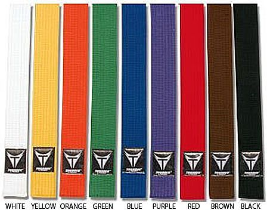
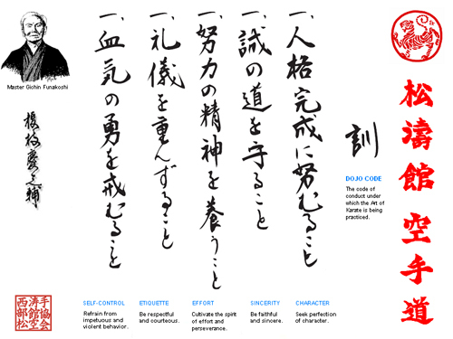

Shotokan Karate
Home Page
Products and Services
Contact
Welcome to a page about
Shotokan Karate
.
Below you will find links on Shotokan Karate's history, belt ranking system, as well as a local dojo to sign up for classes.
If you have anymore question, please contact me by
E-mail
for more information.
Karate Links:
What is Shotokan Karate
Winnipeg Shotokan Dojo
Belt Ranks

Dojo-kun

Seek perfection of character
Be faithful
Endevour to excel
Respect others
Refrain from violent behavior